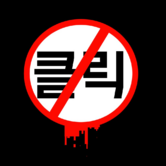

ABNORMALITIES
"They may not all have a reason to exist, but they all have a will to persist."
Abnormalities
- As the name suggests, these are various anomalies found in the world that cannot be explained by conventional means or modern science.
- They give off irregular amounts of power, which we harvest in the form of Enkephalin.
- Each Abnormality is unique, and they all pose a different kind of threat to employee safety.
NOTE: Employees of the facility are advised not to hug or cuddle with D-03-109, no matter how "soft and squishy" it may appear.
Classification Code
- Each Abnormality has a unique code by which it is identified.
- The first letter classifies the Abnormality's origin (Fairy Tale, Trauma, Original, Donated).
- The second number classifies its type (01 for humanoid, 02 for animal, 03 for religious, 04 for inanimate object, 05 for machine or artifact, 06 for abstraction or amalgamation, 07 for Breaching tool, 09 for Tool).
- The third number acts as a unique code for the Abnormality which doesn't repeat.
NOTE: This is not a set rule. Abnormalities are ever-changing, and so are their ID codes.
Suppression
- Abnormalities are mysterious, so we need to learn more about them by testing and failing.
- When a Work with an Abnormality fails, its Qliphoth Counter will go down. When the Qliphoth Counter reaches zero, the Abnormality will usually escape and begin to attack you and your fellow employees.
- At this point, you need to subdue it by force using the E.G.O. weapons you have obtained from other Abnormalities. This process is known as Suppression.
NOTE: Not all Abnormalities will breach. Some stay in their rooms regardless of work result.
Tool Abnormalities
- Tool Abnormalities are nonsentient(?) items that are occasionally added to the facility.
- They do not breach and cannot be worked with, and we can only learn about them by using them.
- Tools give positive effects like regeneration or increased energy production, often for a cost.
NOTE: Please refrain from chugging T-09-80 "Giant Tree Sap".
Dubious Research
- Multiple theories are circulating regarding the various Abnormalities and their connections.
- In particular, Employee #13-37-04-20-69 compiled a report on the Magical Girl Quintet and their potential connections to psychological concepts.
- A transcript of their report can be found here.
NOTE: Employee #13-37-04-20-69 was later terminated while gathering data on T-09-85 "We Can Change Anything". They are unavailable for questioning.
Risk Levels
- Every Abnormality has an assigned risk level depending on how dangerous they are to employee safety.
- Each of the five risk levels are displayed below, along with examples of some Abnormalities falling under that classification, and some helpful firsthand tips from your more experienced peers on how best to deal with them.
ZAYIN
"With little to no aggression, ZAYIN Abnormalities will cause the least harm to Agents."
- The lowest danger level.
- Usually mostly harmless.
- Some of them will help you.
- Foolishness will still lead to mistakes.
O-03-03 “One Sin and Hundreds of Good Deeds”
Pro Tip: One day, he’ll save you from certain doom.

O-05-47 “Don’t Touch Me”
Pro Tip: Heed its request.
F-04-83 “Fairy Festival”
Pro Tip: DON'T TRUST THEM
NOTE: Based on the fifth letter of the Hebrew alphabet, Zayin (ז). It represents the concept of 'returning light.'
TETH
"As long as employees follow the proper managerial guidelines, they will not cause much damage."
- The second-lowest danger level.
- They will hurt you if they can.
- Some of them will still help you.
- Follow procedure and be careful. You ought to be fine.
F-01-52 “Scorched Girl”
Pro Tip: Try to avoid close combat.
O-02-56 “Punishing Bird”
Pro Tip: Newton’s 3rd Law.
D-O2-107 "Ppodae"
Pro Tip: hehheheehehe pubby :)
NOTE: Based on the ninth letter of the Hebrew alphabet, Tet (ט). It represents both good and evil.
HE
"Abnormalities of this class can easily kill a number of employees."
- The middle danger level.
- They can easily kill multiple employees.
- Requires more attention than TETH, but still not overly difficult.
- A few might still help you.
F-01-69 “Der Freischütz”
Pro Tip: His bullet truly can hit anything.
O-01-67 “Laetitia”
Pro Tip: Don't accept gifts from strange children.
T-01-68 “Funeral of the Dead Butterflies”
Pro Tip: Be not afraid.
NOTE: Based on the fifth letter of the Hebrew alphabet, Hey (ה). It represents divine breath, revelation and light.
WAW
"Most will be hostile toward employees, and the death toll could reach into the dozens."
- The second-highest danger level.
- We’re cooking with gas now.
- These guys require a brain cell or two to handle, or they’ll tear you to bits.
- If neglected, they will overwhelm you.
O-02-62 “Judgement Bird”
Pro Tip: Beware of storytime.
O-01-04 “The Queen of Hatred”
Pro Tip: Give her lots of things to help with!
F-01-57 “Little Red Riding Hooded Mercenary"
Pro Tip: Request for WAWs and ALEPHs.
NOTE: Based on the sixth letter of the Hebrew alphabet, Vav (ו). It represents a 'hook' that connects with God and binds together Earth and Heaven.
ALEPH
"You should devote as much concentration and attention as possible to this Risk Level."
- The highest possible danger level.
- Several dozen employees will die.
- If even one of them breaches, it’s considered lucky if they don’t wipe out the entire department staff. (Please do not take our warning as an exaggeration.)
D-03-109 “Melting Love”
Pro Tip: The dead wear pink.
T-01-75 “The Mountain of Smiling Bodies”
Pro Tip: Check your people for open wounds.
O-06-20 “Nothing There”
Pro Tip: Never say goodbye.
NOTE: Based on the first letter of the Hebrew alphabet, Alef (א). It represents 'master' or 'Lord.'